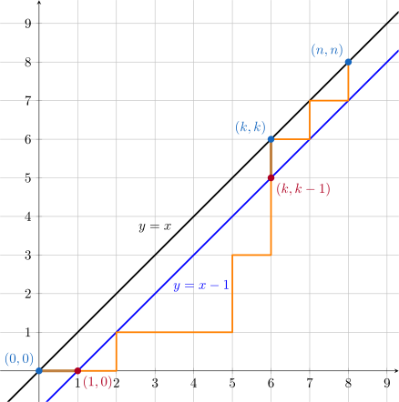
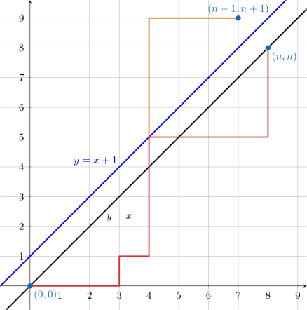
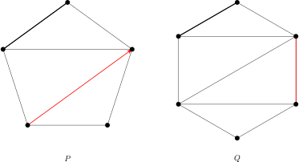

卡特兰数
引入
Catalan 数经常出现在各类计数问题中．比利时数学家 Eugène Charles Catalan 在 1958 年研究括号序列计数问题时发现了这一数列，它也因此得名．清朝数学家明安图早在 18 世纪 30 年代就已经发现这一数列．
Catalan 数满足如下递推关系：
数列的前几项为：（OEIS: A000108，下标从 \(0\) 开始）
应用
Catalan 数 \(C_n\) 的递推关系有着天然的递归结构：规模为 \(n\) 的计数问题 \(C_n\)，可以通过枚举分界点，分拆为两个规模分别为 \(i\) 和 \((n-1-i)\) 的子问题．这一递推关系使得 Catalan 数广泛出现于各类具有类似递归结构的问题中．
-
路径计数问题：有一个大小为 \(n\times n\) 的方格图，左下角为 \((0, 0)\)，右上角为 \((n, n)\)．从左下角开始，每次都只能向右或者向上走一单位，不走到对角线 \(y=x\) 上方（但可以触碰）的情况下，到达右上角的路径总数为 \(C_n\)．
证明
设方案数为 \(T_n\)．考虑 \(n \ge 2\) 的情况．设路径 第一次 走到对角线 \(y=x\) 的点是 \((k,k)~(k \in [1,n])\)．考察从 \((0,0)\) 到 \((k,k)\) 的除起点和终点外，中间的点 不经过对角线（不能碰到） 的路径．

如图所示，这些路径的第一步一定向右，从 \((0,0)\) 到 \((1,0)\)；最后一步一定向上，从 \((k,k-1)\) 到 \((k,k)\)．因此，这些路径就是从 \((1,0)\) 到 \((k,k-1)\) 的不越过直线 \(y=x-1\) 的路径，这样路径的数目就是 \(T_{k-1}\)．同时，从 \((k,k)\) 到 \((n,n)\) 的合法路径数就是 \(T_{n-k}\)．根据乘法原理，第一次在 \((k,k)\) 处触碰对角线的路径数目为 \(T_{k-1} T_{n-k}\)．枚举 \(k\) 的所有可能性，所有合法路径的数目为
\[ T_n = \sum_{k=1}^n T_{k-1}T_{n-k}. \]做代换 \(k=i+1\) 就可以发现，这就是 Catalan 数的递推关系．由 \(T_0=1\) 可知 \(T_n = C_n\)．
-
圆内不相交弦计数问题：圆上有 \(2n\) 个点，将这些点成对连接起来且使得所得到的 \(n\) 条线段两两不交的方案数是 \(C_n\)．
证明
记 \(2n\) 个点的方案数为 \(T_n\)．将 \(2n\) 个点按顺时针标号，分别为 \(1,2,\ldots,2n\)．由于弦两两不交，\(1\) 号点只能连接偶数号点；否则，两点之间的奇数个点无法在不穿过两点连线的情况下两两配对．如果连接了 \(1\) 和 \(2k~(k\in[1,n])\)，那么左边有 \(2k-2\) 个点，右边有 \(2n-2k\) 个点，由乘法原理，这样的方案数为 \(T_{k-1}T_{n-k}\)．因此，枚举 \(k\)，有 \(T_n = \sum_{k=1}^n T_{k-1} T_{n-k}\)．令 \(k=i+1\)，就得到 Catalan 数的递推关系．由 \(T_0=1\) 可知 \(T_n=C_n\)．
-
三角剖分计数问题：对角线不相交的情况下，将一个凸 \((n+2)\) 边形区域分成三角形区域的方法数为 \(C_n\)．
证明
设 \((n+2)\) 边形三角剖分的方案数为 \(T_n\)．先选定一条边 \((1,n+2)\) 作为基边，它一定属于一个三角形，记该三角形的第三个点为 \(k~(k\in[2,n+1])\)．这样，原凸多边形变成了三个部分：
- 三角形 \((1,k,n+2)\)．
- \(k\) 边形，顶点 \(1\sim k\)．
- \((n+3-k)\) 边形，顶点 \(k\sim (n+2)\)．
后面两个部分都是子问题，所以，有递推关系
\[ T_n = \sum_{k=2}^{n+1} T_{k-2}T_{n+1-k}. \]令 \(k=i+2\)，就得到 Catalan 数递归关系．由 \(T_0=T_1=1\) 可知 \(T_n=C_n\)．
-
二叉树计数问题：含有 \(n\) 个结点的形态不同的二叉树数目为 \(C_n\)．等价地，含有 \(n\) 个非叶结点的形态不同的满二叉树数目为 \(C_{n}\)．
证明
记 \(n\) 个结点的二叉树数目为 \(T_n\)．任取一个根结点，枚举左右子树大小．设左子树大小为 \(i\in[0,n-1]\)，则右子树大小为 \((n-1-i)\)．左右子树均为子问题，所以，有递推关系
\[ T_n = \sum_{i=0}^{n-1}T_iT_{n-1-i}. \]这就是 Catalan 数递推关系．由 \(T_0=T_1=1\) 可知 \(T_n=C_n\)．
-
括号序列计数问题：由 \(n\) 对括号构成的合法括号序列数为 \(C_n\)．
证明
联系路径计数问题．将左括号视为向上走，右括号视为向右走．合法括号序列即为，在任意位置，左括号的数量不少于右括号的数量．相当于路径计数问题中，在任意时刻，向上走的次数不少于向右走的次数．因此，合法括号序列与合法路径之间存在双射．合法括号序列的数目同样为 \(C_n\)．
-
出栈序列计数问题：一个栈（无穷大）的进栈序列为 \(1,2,3, \ldots ,n\)，合法出栈序列的数目为 \(C_n\)．
证明
联系括号序列计数问题．将入栈视为左括号，出栈视为右括号．任意时刻，入栈的次数不少于出栈的次数．因此，合法出栈序列与合法括号序列之间存在双射．合法出栈序列的数目同样为 \(C_n\)．
-
数列计数问题：由 \(n\) 个 \(+1\) 和 \(n\) 个 \(-1\) 组成的数列 \(a_1,a_2, \ldots ,a_{2n}\) 中，部分和满足 \(a_1+a_2+ \ldots +a_k \geq 0~(k=1,2,3, \ldots ,2n)\) 的数列数目为 \(C_n\)．
证明
联系括号序列计数问题．将 \(+1\) 视为左括号，\(-1\) 视为右括号．任意时刻，\(+1\) 的数量不少于 \(-1\) 的数量．因此，合法数列与合法括号序列之间存在双射．合法数列的数目同样为 \(C_n\)．
尽管这一递推关系应用广泛，但是直接计算复杂度较高，需要寻找更为简单的公式．
常见形式
Catalan 数有如下常见的表达式：
Catalan 数的这些形式都可以高效计算：前两个形式将它转换为阶乘和组合数的计算问题，第三个形式则提供了顺次计算的递推公式．
对于这三种常见形式，本文提供两种证明方式．
代数推演
通过代数方法得出 Catalan 数的上述表达式共两步．首先，验证三个形式相互等价．
证明表达式 \((2)\sim(4)\) 等价
只需要证明表达式 \((3)\) 可以转化为表达式 \((2)\) 中阶乘形式：
以及，表达式 \((4)\) 也可以转化为表达式 \((2)\) 中阶乘形式：
因此，三个表达式互相等价．
紧接着，验证这些形式确实是 Catalan 数递推公式的解．为此，考虑使用生成函数方法直接求出递推公式 \((1)\) 的解．
利用生成函数方法求解递推公式 \((1)\)
考虑 Catalan 数的普通生成函数 \(C(x)=\sum_{n=0}^{\infty}C_nx^n\)．由于 Catalan 数的递推关系和卷积形式很相似，所以考虑用卷积构造 \(C(x)\) 的方程：
其中，倒数第二个等号交换了求和次序，并令 \(j=n-1-i\)．由此，解得：
由初值条件 \(C_0=1\) 可知，\(C(0)=1\)．代入检验可以发现唯一可行的解就是
接下来，需要将它展开为幂级数的形式．利用 \((1+x)^a\) 的 幂级数展开式 可知：
其中，\(\left(\dfrac{1}{2}\right)_{-n}\) 是下降阶乘幂：
代入 \(C(x)\) 的表达式，就有
由此，就得到 \(C_n\) 的表达式 \((2)\)．
组合意义
由于 Catalan 数具有明显的组合意义，所以只使用组合计数方法同样可以证明这些形式．本节为三个表达式分别提供一个组合意义的证明．
表达式 \((2)\) 的证明
考虑 数列计数问题．对于任意由 \(\pm 1\) 组成的序列 \(\{a_i\}_{i=1}^{2n}\)，定义它的部分和为 \(S_i = \sum_{j=1}^{i}a_i\)，并定义它的 超额量（exceedance）为 \(S_i < 0\) 且 \(a_i = -1\) 的下标数量．超额量为 \(0\)，就等价于数列合法；超额量的取值范围是 \([0,n]\)，共 \((n+1)\) 种可能的取值．需要证明的是，不同超额量的数列数量其实是一样的．
为此，可以构造一个从超额量为 \(e > 0\) 的数列到超额量为 \((e-1)\) 的数列的映射 \(f\)．对于超额量为 \(e > 0\) 的序列 \(\{a_i\}\)，取下标 \(k\) 为使得 \(S_i = 0\) 且 \(a_i = +1\) 成立的下标最小值．将 \(a_k\) 左右两侧的序列交换，就得到如下序列 \(\{a'_i\}\)：
由于原序列中 \(a_k\) 右侧部分在交换前后对应的部分和序列不变，所以它们贡献的超额量也不变．对于原序列中 \(a_k\) 左侧部分，它们对应的部分和在交换后全部增加 \(1\)，因此，它们贡献的超额量会减少，而且减少的数量恰好等于原序列 \(a_k\) 左侧部分中满足 \(S_i=-1\) 且 \(a_i=-1\) 的下标数量．因为 \(a_k\) 的选取保证了这样的下标有且仅有一个，所以，序列 \(\{a'_i\}\) 的超额量就等于 \((e-1)\)．也就是说，映射 \(f\) 可以将序列的超额量恰好减少 \(1\)．
映射 \(f\) 是可逆的．注意到序列 \(\{a'_i\}\) 中，\(a_k\) 对应的位置恰好为满足 \(S'_k=+1\) 且 \(a'_i = +1\) 的下标最大值．这是因为交换后，这些部分和都比交换前对应的部分和恰好大 \(1\)，因此，现在的部分和为 \(+1\) 对应交换前部分和等于 \(0\)．但是，根据 \(k\) 的选取，交换前这一部分（即原序列 \(a_k\) 左侧部分）是没有满足 \(S_i = 0\) 且 \(a_i = +1\) 成立的下标的．
由此，映射 \(f\) 构成了超额量为 \(e>0\) 的序列和超额量为 \((e-1)\) 的序列之间的双射．这就说明，不同超额量的数列数量其实是一样的．由于数列总数是 \(\dbinom{2n}{n}\)，合法数列（即超额量为 \(0\) 的数列）数量就等于
这就证明了 Catalan 数的表达式 \((2)\)．
表达式 \((3)\) 的证明
考虑 路径计数问题．这是典型的格路计数问题，可以通过反射原理求解．具体到本问题，考虑用总路径数目减去不合法的路径数目．总路径数一共要走 \(2n\) 步，其中 \(n\) 步向右，所以方案数为 \(\dbinom{2n}{n}\)．一条路径不合法，当且仅当它碰到了直线 \(y = x+1\)．对于任意一条非法路径，可以找到第一次碰到直线 \(y = x+1\) 的位置，并将该位置之后的路径关于直线 \(y=x+1\) 做对称．此时，可以发现，一条从 \((0,0)\) 到 \((n,n)\) 的非法路径，变成了一条从 \((0,0)\) 到 \((n-1,n+1)\) 的路径．

由于从 \((0,0)\) 到 \((n-1,n+1)\) 的路径必定要穿过直线 \(y = x+1\)，所以每条这样的路径都对应一条从 \((0,0)\) 到 \((n,n)\) 的非法路径．类似总路径数的计算，非法路径数目的总数就是 \(\dbinom{2n}{n+1}\)．因此，合法路径的总数为
这就是 Catalan 数的表达式 \((3)\)．
表达式 \((4)\) 的证明
考虑 三角剖分计数问题．设 \(P\) 是凸 \((n+2)\) 边形，固定它的一个边为基边．对于多边形 \(P\) 的每一个三角剖分，都可以选择它的一个非基边（包括三角剖分时新加的边）标记，并定向．这共有 \((4n+2)C_n\) 种剖分加标记的方案．又设 \(Q\) 是凸 \((n+3)\) 边形，仍固定它的一个边为基边．对于多边形 \(Q\)，可以选择它的一条非基边标记，然后再做三角剖分．这共有 \((n+2)C_{n+1}\) 种标记加剖分的方案．

如图所示，这两组操作得到的结果之间存在明显的双射．对于 \(P\) 剖分并标记的一个结果，可以将它的标记边扩展为三角形，定向所指向的终点扩展为一条新边，并将这条新边打上标记，这就得到对 \(Q\) 标记并剖分的一个结果；对于 \(Q\) 标记并剖分的一个结果，可以将它的标记边压缩为一个点，并将压缩得到的对角线打上标记，且指向压缩得到的顶点，这就得到对 \(P\) 剖分并标记的一个结果．因此，
稍作整理，并结合 \(C_0=1\)，就得到 Catalan 数的表达式 \((4)\)．
例题
洛谷 P1044 栈
入栈顺序为 \(1,2,\ldots ,n\)，求所有可能的出栈顺序的总数．
参考代码
1 2 3 4 5 6 7 8 9 10 11 12 13 14 | |
1 2 3 4 5 6 7 | |
习题
- Luogu P2532 [AHOI2012] 树屋阶梯
- Luogu P1641 [SCOI2010] 生成字符串
- Luogu P3200 [HNOI2009] 有趣的数列
- AtCoder Beginner Contest 205 E - White and Black Balls
- AtCoder Regular Contest 145 C - Split and Maximize
- Luogu P5014 水の三角（修改版）
- Luogu P3978 [TJOI2015] 概率论
参考资料与注释
本页面最近更新：，更新历史
发现错误？想一起完善？ 在 GitHub 上编辑此页！
本页面贡献者：OI-wiki
本页面的全部内容在 CC BY-SA 4.0 和 SATA 协议之条款下提供，附加条款亦可能应用